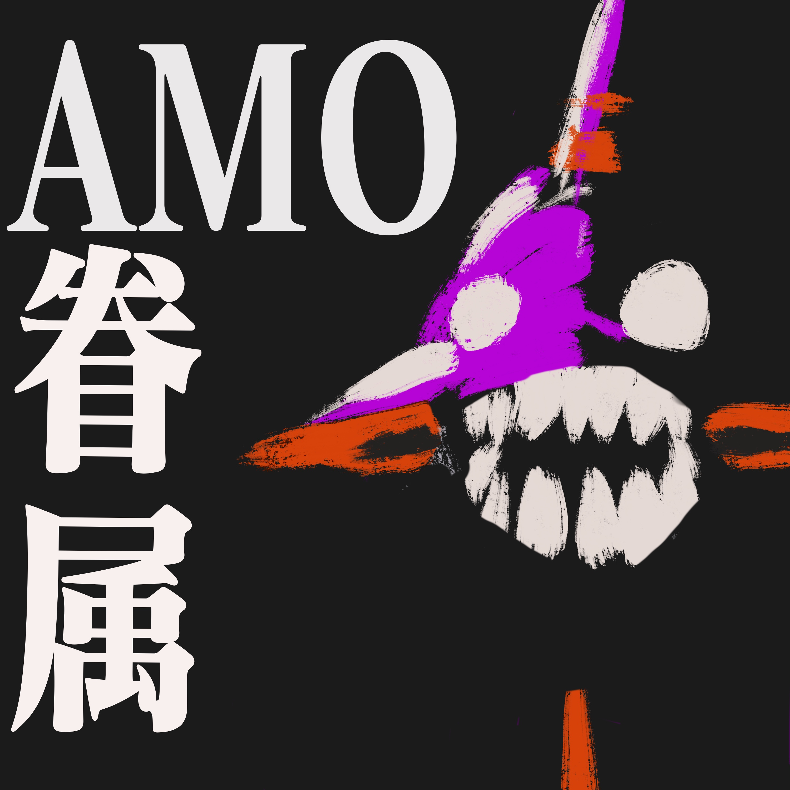

 Rebuild of Evangelion - Part 1 Published on 18 February 2022 Premier Episode of AMO Kenzoku is all about the Evangelion Rebuild movies, and some on the TV series too
Rebuild of Evangelion - Part 2 : You Can (Not) Elucidate Published on 22 February 2022 Evangelion Rebuild discussion Part Two. Plots. Spoilers Galore. Enjoy.